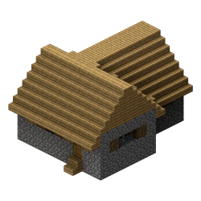
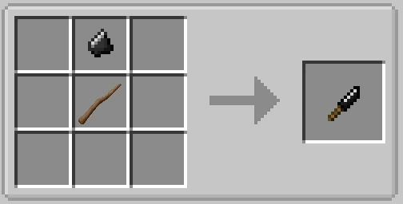
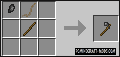

The first thing you're going to want to do is find shelter. There are many monsters in the world of RLCraft in every possible biome, and chances are, you're not going to progress enough to build your standard wood hut before your first night. Luckily, there are tons of generated structures that make great shelter. Look for things such as small homes or other similar buildings, like this house here:
These houses will provide you refuge through your first night and they might even include small bits of loot to help get you started.
Getting wood is a bit of a process. In order to cut down trees, you need an axe known as a flint hatchet. The first thing to do is look for gravel. Breaking gravel has a chance to give you flint, which you're going to need. Once you've found some gravel, break it until you have a piece of flint. Find some form of hard block (such as stone) and right click repeatedly with the flint. This will break the flint into flint shards. Then, go and break some leaves on some trees. In RLCraft, leaves have a chance of dropping sticks. In your inventory, craft together one flint shard and a stick to get a flint knife.
With a flint knife, you can break tall grass to get plant fibers. Collect lots of these (you'll need a lot later) and then put 3 of them in separate spaces in your inventory's crafting grid. This will yield an item known as plant string. This plant string can be combined with another stick and a flint shard in your crafting grid to create a flint hatchet.
Now, you can finally cut down trees! The Dynamic Trees mod is in use, so breaking the bottom piece of a tree topples the whole thing (just don't get squished by it!) and then drops all of the wood that the tree has grown.
After you've collected a few bits of wood, you may notice that you can't just craft 4 planks in your crafting grid. You actually have to place the logs down and break them with a hatchet in order to get planks. Then, you can finally make a crafting table.
Now that the world of crafting is open, you may ask yourself, "what's next?"